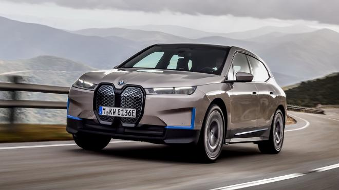

BMW iX

ÖNE ÇIKAN ÖZELLİKLER
Bir vizyondan doğdu. Elektrikli mobilite için tasarlandı. Verimli BMW eDrive teknolojisi ve elektrikli dört çeker sürüş özelliği sayesinde BMW iX olağanüstü bir menzile sahip ve sıfır kilometreden itibaren etkileyici bir hızlanma elde ediyor. Yalın tasarım dili ona modern ve iddialı bir görünüm kazandırıyor. İç tasarımda en son teknolojiyle bir araya getirilen yüksek kalitede premium atmosfer, maksimum konfor ve beş kişi için ferah bir oturma alanı sunuyor. Yeni favori mekanınızı keşfedin: Yeni BMW iX.
----------------------------------------------------------------------------------------------------------------------------
BMW iX DIŞ TASARIM
Pürüzsüz yüzeyleri ve minimalist tasarımı ile güçlü karakterini yansıtıyor.
------------------------------------------------------------------------------------------------------------
YAKIT TÜKETİMİ VE CO2 EMİSYONU
* WLTP test döngüsüne göre ölçülmüştür
**DC tipi (200 kw) ortak şarj istasyonları ile
BMW iX(1):
Güç tüketimi (kWsa/100) (ortalama): 21 altında
Yakıt tüketimi (l/100 km) (ortalama): 0
CO2 emisyonu (g/km) (ortalama): 0
(1) işaretli otomobillere ait değerler ön değerlerdir.
Burada gösterilen yakıt tüketimi, CO2 emisyonu ve enerji tüketim değerleri onay sırasında yürürlükteki Avrupa Mevzuatı (EC) 715/2007’ye göre belirlenmiştir. Rakamlar Almanya’da temel konfigürasyona sahip bir araca aittir ve gösterilen menzil seçilen modelde yer alan opsiyonel donanım ve farklı boyutta jant ve lastikleri göz önünde bulundurur.
-----------------------------------------------------------------------------------------------------------
YENİ BMW iX’İN YENİLİKÇİ AERODİNAMİK ÖZELLİKLERİ
BMW iX, dinamik tasarımının her detayında "biçim fonksiyonu izler" ilkesine uyum sağlıyor. Bunu geriye yaslanmış cam bölümü ve sayısı azaltılan ek yerleriyle pürüzsüz yüzeye sahip gövdesinden ve düz gövde altından kolaylıkla anlayabilirsiniz. Kapalı ön tasarım ve arkadaki difüzör ile birlikte gömme kapı kolları ya da cam şeritlerine entegre edilen dış aynalar gibi alışılmadık detayların bileşimiyle BMW iX yalnızca 0,25’lik olağanüstü bir Cd değeri elde ediyor. Bu sayede menzil ve verimliliği yenilikçi SAV tasarımında bir araya getiriyor.
---------------------------------------------------------------------------------------------------------------
BMW iX'in MENZİLİ
BMW iX premium SAV segmentinde devrim yapıyor. 600 km*’nin üzerindeki menziliyle uzun mesafeli yolculuklar için ideal olmasının yanı sıra günlük kullanım için de ideal bir otomobil. Bu üst düzey performans, akıllı yapı ile hafif alüminyum, çelik ve karbon gibi yenilikçi malzemelerin kombinasyonu konusunda uzun yıllar boyu edindiğimiz deneyim sayesinde ağırlığı optimize edilmiş benzersiz gövde konseptiyle mümkün oluyor.
Yeni BMW iX’i Türkiye’de de sayısı gün geçtikçe artan şarj istasyonlarında rahatlıkla şarj edebilirsiniz. AVM’lerde ve otoparklarda sıklıkla görmeye başladığımız ve BMW’nin resmi olarak işbirliği içerisinde olduğu şarj istasyonlarının sayısını sürekli arttırıyoruz. Üstelik bu istasyonların çoğunda hızlı şarj imkanı bulunuyor, böylelikle siz yemeğinizi yerken bile otomobiliniz yeterli bir batarya doluluğuna ulaşabiliyor.
----------------------------------------------------------------------------------------------------------
Yenilikçi motor konsepti
Beşinci nesil BMW eDrive teknolojisinde iki elektrikli motora ek olarak yüksek gerilimli depolama sistemi, güç elektrik devreleri ve BMW iX’in şarj teknolojisi yer alıyor. Elektrikli dört çeker sistemiyle bir araya getirilen iki güçlü elektrik motoru verimlilik sağlamanın yanı sıra 500* bg üzerinde güç üreten ve 0’dan 100 km/sa hıza beş saniyede ulaşabilen BMW iX’in gücünü bir spor otomobil seviyesine çıkarıyor.
----------------------------------------------------------------------------------------------